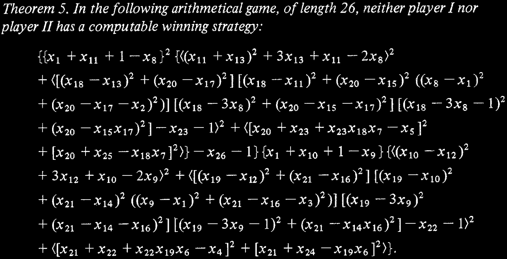

Diophantine games involve an integer equation in some number of variables. Two players take turns choosing values for the variables, with one player trying to make the equation true in the end, and the other trying to make it unsatisfiable. J. P. Jones, motivated by the theory of Diophantine equations, studied Diophantine games and constructed a game in which one player has a winning strategy which is not computable . The equation specifying this game is shown above as an excerpt from his paper.
This web app allows you to play such a Diophantine game against friends or strangers online!